Sólo 1.500 de los 15.000 afectados por la suspensión del servicio del catamarán Turbocat lograron ayer recuperar el importe de los pasajes que ya habían pagado.

La cancelación de los viajes del ferry de Naviera Universal desató una frenética contrarreloj de pasajeros frustrados que intentaban recuperar su dinero y conseguir plaza en aviones o barcos de otras compañías en medio de un gran caos.
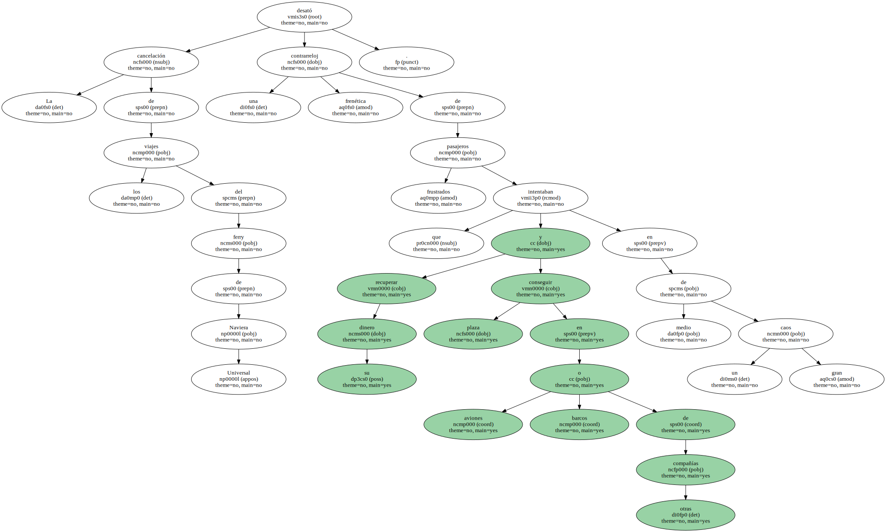La Organització de Consumidors i Usuaris de Catalunya ( OCUC ) destacó que los afectados pueden recurrir a la vía penal , al considerar que la empresa vendió billetes pese a conocer los continuos fallos del catamarán.
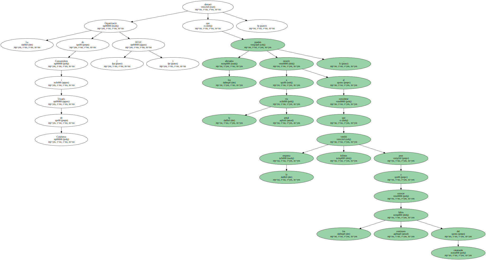AGOLPADOS EN LAS OFICINAS.
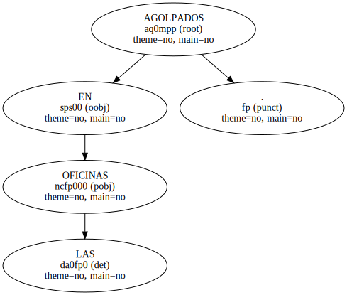Cientos de personas se agolparon en las oficinas de la empresa en el puerto de Barcelona.
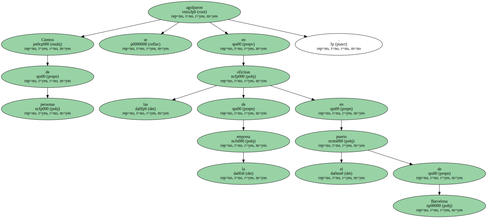De entrada , quienes habían adquirido los pasajes a través de las agencias de viajes se encontraron con que Naviera Universal no les iba a devolver el dinero y les remitía a las agencias.
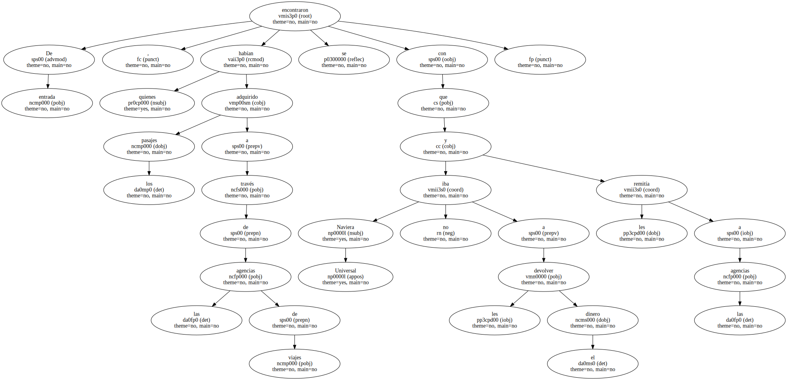Una vez allí , recibieron una respuesta similar.
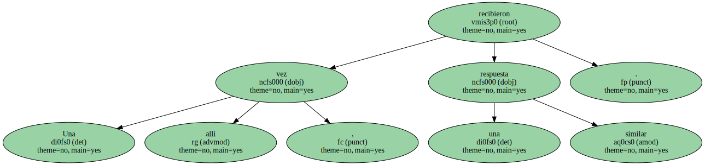" Ha venido mucha gente pidiéndonos que les devolvamos el importe del billete , pero es Turbocat quien debe solucionar el problema , no nosotros " , indicó una empleada de Halcón Viajes.
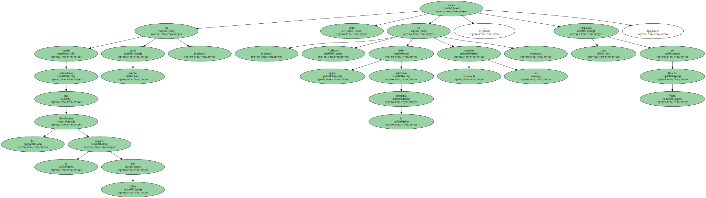Ésta y otras agencias buscaban alternativas de transporte para sus clientes , principalmente en las aerolíneas que unen Barcelona y las Baleares ( Iberia , Spanair y Air Europa ).
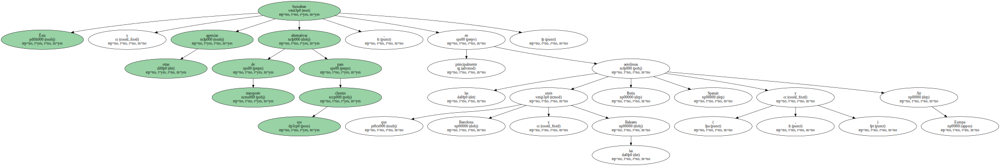Pero los únicos billetes disponibles eran los más caros.
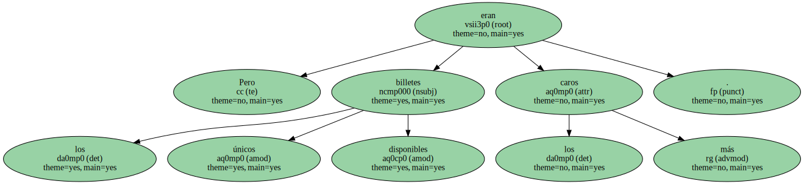QUEJAS.
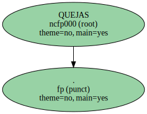Así , mientras el viaje en el Turbocat costaba en promedio 138 euros ( 22.961 pesetas ) , en un avión de última hora se pueden llegar a pagar hasta 249 ( 41.430 pesetas ) , casi el doble.
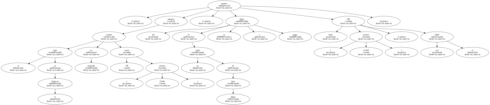La otra opción , las líneas de Trasmediterránea - - con un catamarán que hace el viaje en cuatro horas - - , no es menos complicada.
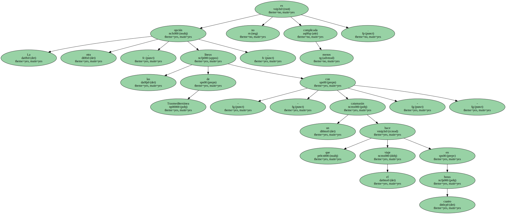" Hacemos lo que podemos , pero es una época muy difícil " , manifestó un portavoz de la naviera.
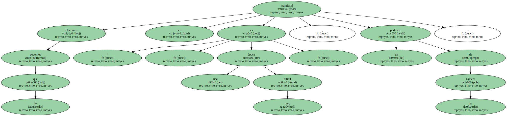Los afectados volvieron a quejarse de la mala atención que reciben de Turbocat.
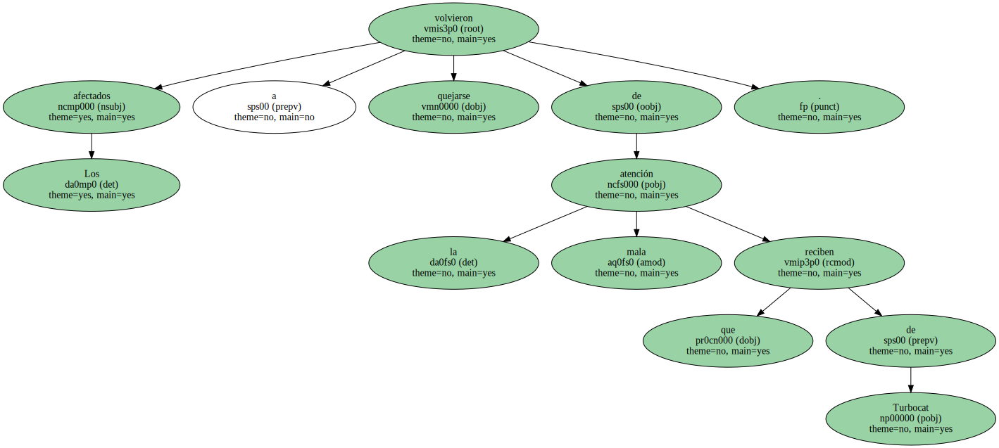A media mañana el dinero en efectivo se acabó y hubo un largo rato de espera.
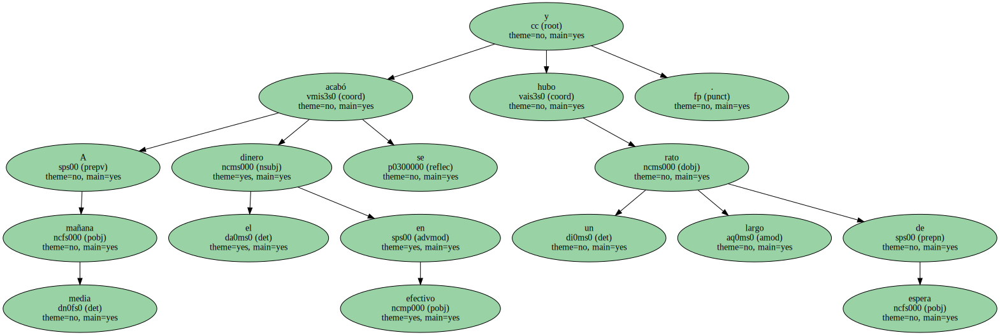" Nos han estropeado las vacaciones , hacemos cuatro horas de cola y ya no tienen dinero . Es indignante " , dijo una afectada.
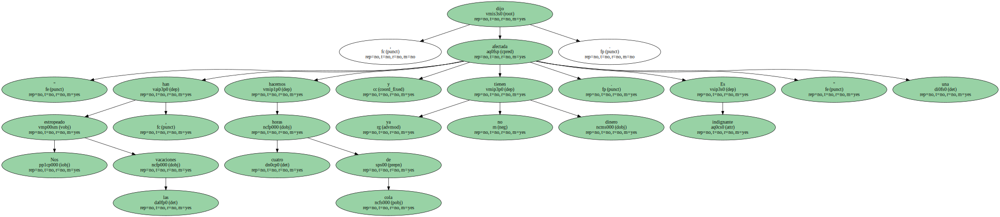Muchos han presentado reclamaciones ante la Conselleria d'Indústria.
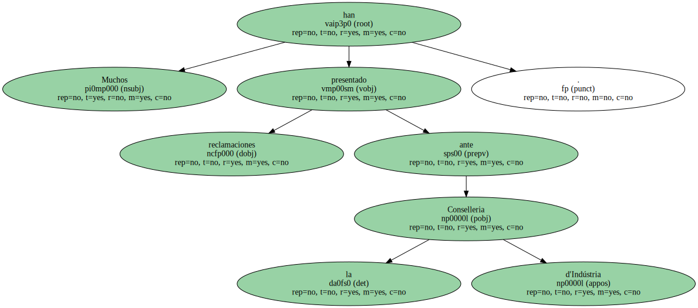La OCUC recomienda a los afectados rellenar la hoja de reclamaciones para denunciar la infracción.
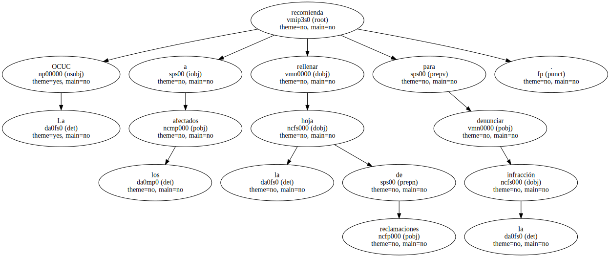Sin embargo , como la Generalitat ya ha abierto expediente sancionador , pueden optar por solicitar una mediación o un arbitraje con objeto de pactar daños y perjuicios por los costes de manutención , hotel y cancelaciones que están teniendo que asumir.
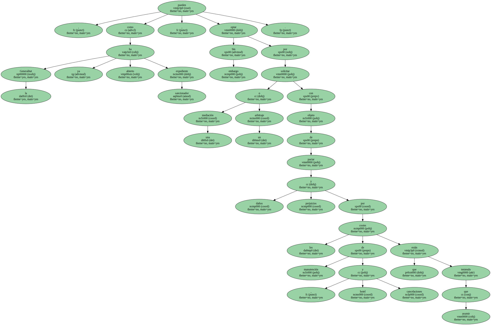Si la empresa se niega , se puede optar por la vía civil , ya que la avería no es un caso de " fuerza mayor " , según explicó la abogada de la asociación , Cristina Chueca.
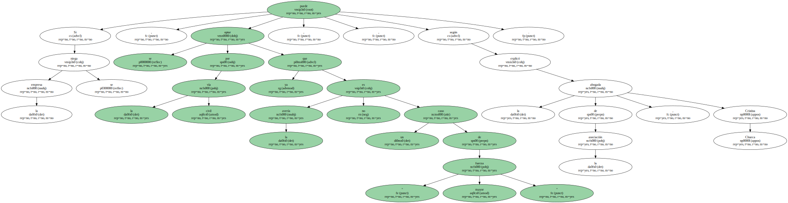La reiteración de los daños las convierte en " previsibles " , por lo que se podría considerar que hubo indicios " de estafa " y actuar incluso por la vía penal , manifestó la misma fuente.
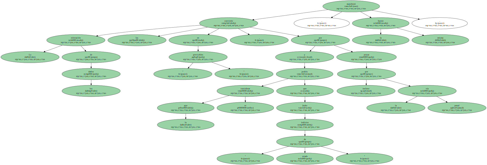